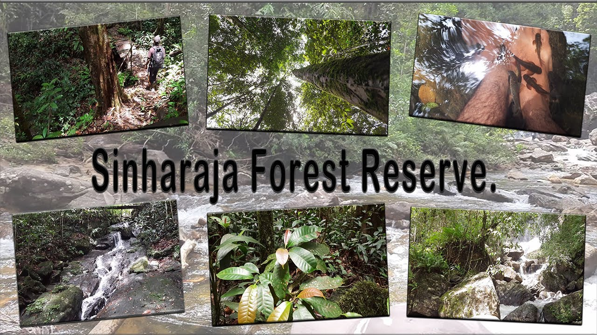
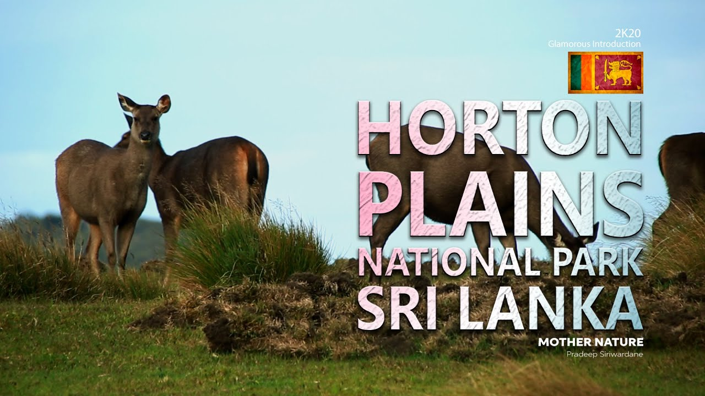

CLASSIFICATION...(<---press here)
Sinharaja Forest Reserve

"Sinharaja is a Rain Forest and a biodiversity hotspot which is located in south west lowland
wet zone within Sabaragamuwa and Southern provinces of Sri lanka. Sinharaja rain forest is
the country's last viable area of primary tropical rain forest. It covers an area of 11.000 Ha
of primary and secondary forests. This narrow trip of rolling site comprises of a series of ridges
and valleys. More than 60% of the trees are endemic to Sinharaja Forest and many of them are
considered rare. There is much endemic wildlife, especially birds but the reverse is also home to
over 50% of Sri Lanka's endemic species of butterflies and mammals and also many kinds of insects,
reptiles and rare amphibians. This is one of the main reasons that UNESCO declared Sinharaja
Forest as a UNESCO World Heritage in 1988 under the name of Sinharaja Forest Reserve. In 1936
Sinharaja Forest was first recognized as being the only considerable patch of virgin tropical
rain forest in the island".
Yala National park
 "Nested in the south-eastern corner of Sri Lanka, Yala National Park is the island's principle
national park and offers the greatest diversity of animal and bird life in the country.
The habitats found in the park are wide-ranging from freshwater lakes to beaches, rocky outcrops
to green plains and jungle. This creates an area of immense biodiversity and is one of the world's
most popular destinations to spot the elusive leopard, who love to lounge on the huge granite
boulders that dot the parkland. Situated in the dry zone of Sri Lanka, annual rainfall for the Yala
region is between 900 and 1300mm depending on location, with December and January generally the wettest
months and drought between May to September".
"Nested in the south-eastern corner of Sri Lanka, Yala National Park is the island's principle
national park and offers the greatest diversity of animal and bird life in the country.
The habitats found in the park are wide-ranging from freshwater lakes to beaches, rocky outcrops
to green plains and jungle. This creates an area of immense biodiversity and is one of the world's
most popular destinations to spot the elusive leopard, who love to lounge on the huge granite
boulders that dot the parkland. Situated in the dry zone of Sri Lanka, annual rainfall for the Yala
region is between 900 and 1300mm depending on location, with December and January generally the wettest
months and drought between May to September".
Horton Plains

"Horton Plains in Sri Lanka, is the coldest and windiest location in the country. It
consists of ecosystems such as Montane evergreen forests, grasslands, marshy lands and
aquatic ecosystem. At the altitude of 2,100 meters above sea level, Horton Plains spreads
across over 3,169 hectares of the highest tablehand of the island. In view of the large
number of endemic flora and fauna species, Hortan Plains was declared a UNESCO World Heritage
site on 30th July 2010. The climate of Hortan Plains is that of a wet Montane forest. The
average annual temperature of 14-16 Centrigrade while the humidity is relatively low at
65%. Though annual rainfall of the highlands is about 2540mm, Horton Plains records over 5000mm
of rainfall annually."